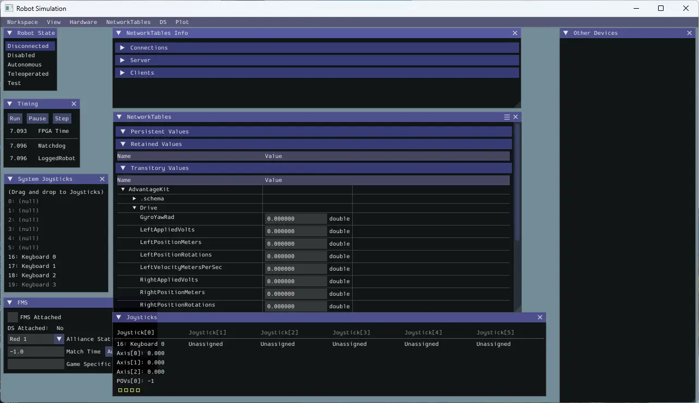
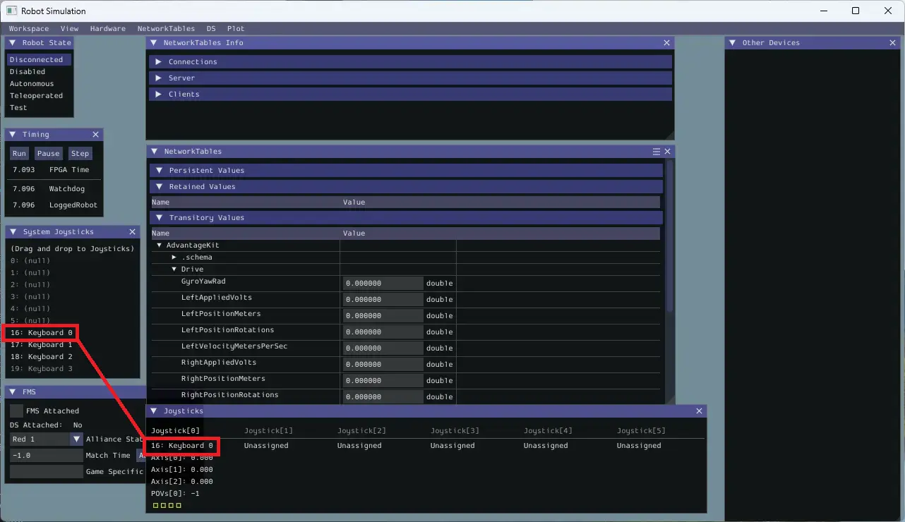
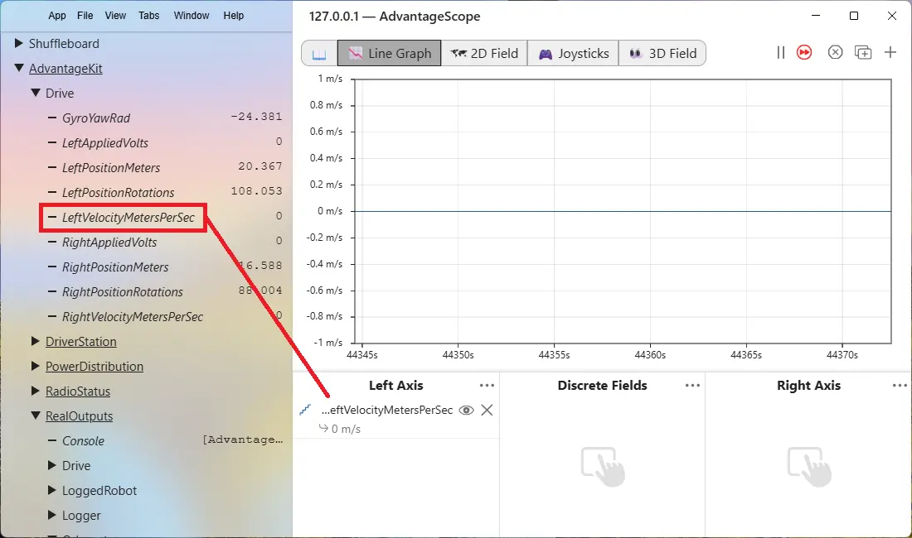
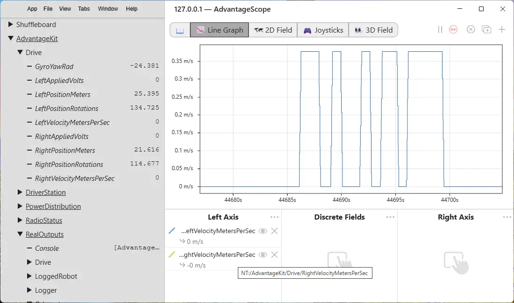
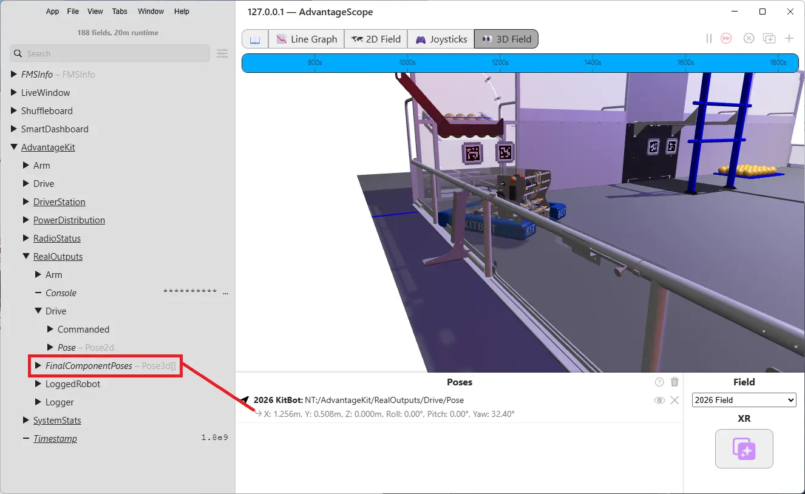
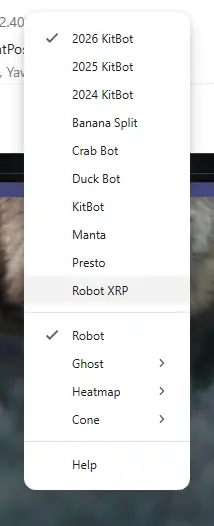

This section assumes you have a USB drive from your mentor. If you're working through this on your own without a USB drive, switch to Part 1B - Install the tools (Web) in the nav above.
You're about to install WPILib VS Code and WPILib start tools, build a project, and drive a robot that doesn't physically exist.
WPILib is a big install. Gradle downloads every dependency on the first build. It's slow, but these are the tools we need!
What "done" looks like today
Six things need to work before you leave. We're going to do them in order. Each one builds on the last.
1. WPILib + VS Code installed
The official FRC editor with all the robot tools built in.
Includes Java, libraries, build tools - one big install.
2. First Drive project builds
Open the First Drive project and compile it successfully.
If this works, your code is ready to run in simulation.
3. Simulator runs
Simulate the robot code that was just built, control robot modes, map joystick or keyboard to control the robot, and see robot data.
No XRP needed today.
4. AdvantageScope launches
Included with WPILib. Lets you see what the robot is doing in real time.
If WPILib is the workshop, AdvantageScope is the dashboard.
5. AdvantageScope shows values
Connect to the simulator, drag a value onto the graph, watch it move.
If the number moves when you drive, everything is wired up correctly.
6. AdvantageScope simulates in 2D/3D
Add the robot pose to the 2D/3D view and control the robot!
If the robot moves on the screen when you drive, your pose data is making it all the way through.
Bonus: Lesson Summary card in hand
Two-page PDF cheat sheet. Saved somewhere you'll actually find it again.
You'll use this every session from now on.
Windows, Mac, and Linux are supported. Instructions below cover windows. Use the Web install instructions if you don't have access to the team USB or if you are using a different operating system.
It happens. Java gets confused, firewalls block downloads, antivirus quarantines installers. If yours breaks and you've spent more than 15 minutes on one issue, switch to a backup laptop and keep going. You can troubleshoot your own machine later with a mentor.
Everyone leaves with something working - even if it's on a borrowed laptop.
What's on the USB drive
Everything you need is on the USB drive your mentor gave you. Copy all files to your laptop before you start. NOTE: It is recommended to put the files C:\Bearbots. You may run into issues if you put the files in Onedrive.
- Web Instructions - FRC\bearbots-xrp-code\docs\Index
.html - Lesson01-project - FRC\bearbots-xrp-code\Lesson01\Lesson01-Project
.zip, contains the First Drive project. - FRC Lesson 01 Summary - FRC\bearbots-xrp-code\handouts\FRC_Lesson01_Summary_Card
.pdf - 7-Zip - Install\7-zip\7z*-WindowsVersion
.exe - WPILib installer - Install\WPILib-VSCode\WPILib_Windows-year.*
.iso - VS Code zip file - Install\WPILib-VSCode\VSCode-win*
.zip(Provided for offline installation) - Gradle Cache - Install\Lesson01\Gradle Cache\caches (Provided for offline installation)
- XRP Firmware - Install\XRP Firmware\xrp-wpilib-firmware-2.1.0-aa439f0
.uf2
Pick the right OS version. If you grab the wrong one, the installer won't run.
Install WPILib + VS Code
WPILib is the official FRC software suite. It includes a special version of VS Code, the Java runtime you need, and every library used by FRC robot code. One installer, everything you need.
The WPILib installer is about 1.5 GB and takes 10-15 minutes to extract and install. If nothing seems to be happening, it's probably still working. Don't cancel it.
1. Right click WPILib_Windows-2026.x.x.iso in the files copied from the USB drive and select mount
2. Double-click WPILibInstaller.exe to start the installation
3. If Windows asks "Do you want to allow this app to make changes?" → click Yes
4. If Windows SmartScreen blocks it → click More info, then Run anyway
5. Keep the default install path. Don't change it.
6. When asked: Select the install mode you would like.. Select Everything.

7. When asked: Download VS Code:
ONLINE Steps:
- Select Download for this computer only (fastest), then click Next.

When the installer finishes, launch WPILib VS Code 2026 from your desktop icon (Windows). VS Code opens with a WPILib theme - that's how you know it's the right one.

If you already had VS Code installed, you now have two of them. Regular VS Code and WPILib VS Code. They look almost identical, but only the WPILib one has the robot tools.
Always use WPILib VS Code 2026 for this curriculum. Pin it to your taskbar or dock so you don't accidentally open the wrong one.
Press Ctrl+Shift+X to open the Extensions panel. Under Installed you should see:
- WPILib
- Language Support for Java
- Debugger for Java
- Project Manager for Java
If any are missing, the WPILib installer may not have completed correctly. Re-run it before continuing.
WPILib is installed and AdvantageScope is ready to launch. Next we'll open the First Drive project and verify your environment can actually compile robot code.
This section is for self-paced learners downloading everything from the web. If your mentor gave you a USB drive, switch to Part 1A - Install the tools (USB) in the nav above.
You're about to install WPILib VS Code and WPILib start tools, build a project, and drive a robot that doesn't physically exist.
1. WPILib + VS Code installed
The official FRC editor with all the robot tools built in.
Includes Java, libraries, build tools - one big install.
2. First Drive project builds
Open the First Drive project and compile it successfully.
If this works, your code is ready to run in simulation.
3. Simulator runs
Simulate the robot code that was just built, control robot modes, map joystick or keyboard to control the robot, and see robot data.
No XRP needed today.
4. AdvantageScope launches
Included with WPILib. Lets you see what the robot is doing in real time.
If WPILib is the workshop, AdvantageScope is the dashboard.
5. AdvantageScope shows values
Connect to the simulator, drag a value onto the graph, watch it move.
If the number moves when you drive, everything is wired up correctly.
6. AdvantageScope simulates in 2D/3D
Add the robot pose to the 2D/3D view and control the robot!
If the robot moves on the screen when you drive, your pose data is making it all the way through.
Bonus: Lesson Summary card in hand
Two-page PDF cheat sheet. Saved somewhere you'll actually find it again.
You'll use this every session from now on.
What to download
You need two things. Download all before you start the install.
- WPILib installer — includes VS Code, no separate download needed.
docs.wpilib.org → WPILib Installation Guide - First Drive Project — the BearBots XRP project to verify your environment is set up.
github.com/Helijason/bearbots-xrp-code → navigate to Lesson01 → First Drive, then click Code → Download ZIP - XRP Robot 3D Model — custom AdvantageScope asset for the BearBots XRP.
Go to download-directory.github.io, paste this URL and press Enter:
https://github.com/Helijason/bearbots-xrp-code/tree/main/assets/advantagescope/Robot_XRP
Install WPILib + VS Code
1. Double-click on the downloaded WPILib exe.
2. If Windows asks "Do you want to allow this app to make changes?" → click Yes
3. If Windows SmartScreen blocks it → click More info, then Run anyway
4. Keep the default install path. Don't change it.
5. When asked: Select the install mode you would like.. Select Everything.
6. When asked: Download VS Code. Select Download for this computer only (fastest).
7. Click Execute Install and wait. The progress bar moves slowly.
When the installer finishes, launch WPILib VS Code 2026 from your Start menu (Windows). VS Code opens with a WPILib theme - that's how you know it's the right one.
Press Ctrl+Shift+X to open the Extensions panel. Under Installed you should see:
- WPILib
- Language Support for Java
- Debugger for Java
- Project Manager for Java
If any are missing, the WPILib installer may not have completed correctly. Re-run it before continuing.
If you already had VS Code installed, you now have two of them. Regular VS Code and WPILib VS Code. They look almost identical, but only the WPILib one has the robot tools.
Always use WPILib VS Code 2026 for this curriculum. Pin it to your taskbar or dock so you don't accidentally open the wrong one.
The First Drive project is a complete, working robot program. Today you're opening it and verifying your environment can compile it and run in the simulator. You'll explore what's actually inside in .
Step 1 - Open the folder in WPILib VS Code
- Launch WPILib VS Code 2026 (the WPILib one - not regular VS Code if previously installed.)
- Click File → Open Folder
- Navigate to
C:\FRC\bearbots-xrp-code\lesson01\First Drive - Click Select Folder
VS Code will ask if you trust the authors. Click Yes, I trust the authors.
You should see a file tree on the left with folders like src, files like build.gradle, and a .wpilib folder. If you see those, the project is open correctly.
Step 2 - Build the project
This is the moment of truth. If the build works, your environment is healthy.
1. Click the WPILib hexagon logo in the top-right corner of VS Code
2. Type WPILib: Build Robot Code
3. Press Enter
4. Watch the terminal at the bottom of VS Code
The first build is slow - Gradle is downloading every library the project uses (Web users only). Subsequent builds will be faster. When it finishes successfully, you'll see BUILD SUCCESSFUL in the terminal output.
You compiled real robot code. The Java source files in src/main/java were turned into runnable bytecode. This is the same process you'll run every time you change anything in the project. You don't need to know how it works yet - just know that this is the loop: edit code, build, see if it works.
Check these in order:
1. Are you in WPILib VS Code, not regular VS Code?
2. Did you open the folder, not just a single file?
3. Did the extract actually create a real folder?
4. Is your internet working (Web Users only)? Gradle needs to download dependencies on first build.
If all of those are fine and it's still failing, ask a mentor.
This is the part you've been working toward. You're going to start the simulator, drive a virtual robot with your keyboard, and see logged values move in real time on a graph. After this, everything else in the curriculum is downhill.
90% of bugs are logic bugs, not hardware bugs. The simulator catches them faster and cheaper, without risk of the robot driving into the scoring table in front of the head referee. Real teams do this. It's not a beginner shortcut.
Step 1 - Start the simulator
1. In WPILib VS Code, click the WPILib hexagon logo in the top right corner of VS Code.
2. Type WPILib: Simulate Robot Code
3. Press Enter
4. When prompted, check halsim_gui and click OK
5. When prompted to allow public and private networks to access this app? (OpenJDK Platform binary), click Allow
6. Wait for the build (it's quick this time - already compiled)
7. A new window will appear: the Simulation GUI

Step 2 - Set up keyboard driving
1. Find the System Joysticks panel in the Simulation GUI
2. Drag Keyboard 0 from System Joysticks into the Joysticks panel (slot 0)

3. Find the Robot State panel → click Teleoperated

W
Drive forward
S
Drive backward
A
Turn left
D
Turn right
The Simulation GUI by itself doesn't show the robot moving - that's what AdvantageScope is for. The robot is receiving your commands. You'll see the proof in a moment. What you will see is data updating in the Network Tables.

Step 3 - Open and connect AdvantageScope
Keep the simulator running. Launch AdvantageScope from inside WPILib VS Code — don't close VS Code.
1. In WPILib VS Code, click the WPILib hexagon logo in the top right corner of VS Code.
2. Type WPILib: Start Tool and press Enter
3. Select AdvantageScope from the list
1. In AdvantageScope: File → Connect to Simulator and select Default: NetworkTables 4 (or Ctrl+Shift+K)

2. Look at the top and you'll see a time bar start timing.
3. The left sidebar will populate with log keys (you'll see AdvantageKit/Drive/, AdvantageKit/DriverStation, etc.)
Step 4 - Drag values onto the graph
The left sidebar in AdvantageScope is now populated with every value your robot is logging. We'll graph two of them.
1. In the top tabs select the Line Graph
2. In the left sidebar, expand AdvantageKit → Drive
3. You'll see fields like LeftVelocityMetersPerSec, RightVelocityMetersPerSec
4. Drag LeftVelocityMetersPerSec onto the Left Axis below the main graph area

5. Drag RightVelocityMetersPerSec onto the same Left Axis area
Step 5 - Drive and watch
1. Click the Simulation GUI window (so it has keyboard focus)
2. Make sure Teleoperated is still enabled
3. Press and hold W for a couple seconds, then release
4. Switch to AdvantageScope
5. Both velocity lines should spike up while you held W, then fall back to zero

You ran robot code without a robot. You drove a virtual machine with your keyboard. You logged sensor values to disk and graphed them in real time.
If you understand nothing else from today, understand this: code → build → simulate → drive → watch values is the loop. You'll run it hundreds of times.
Step 6 - View the robot in 2D
Now let's see the robot move on the field.
1. In AdvantageScope, select 2D Field from the Top Tabs.
2. In the left sidebar, expand AdvantageKit → RealOutputs → Drive
3. Find Robot — it will show as Pose - Pose2d

4. Drag Robot onto the 2D Field view, under Poses
5. A blue box with an arrow will appear in the top-right corner of the field — this is called the Blue Origin
6. Click the Simulation GUI window to give it keyboard focus
7. Drive with W, S, A, D and watch the robot icon move on the field
Step 7 - View the robot in 3D
Switch to 3D Field in AdvantageScope's top Tabs. The robot pose doesn't carry over automatically - you'll need to add it again. We will add the 2026 kitbot and change it to a custom XRP robot with a working arm.
1. In the left sidebar, expand AdvantageKit → RealOutputs → Drive
2. Drag Robot onto the 3D Field view, under Poses, (Same as 2D instructions)

3. Add the arm component. Drag FinalComponentPoses - Pose3d into the same box as the drive pose.

4. Select a custom assets folder from App → Use Custom Assets Folder. Lesson01-Project\assets\advantagescope

5. Goto the 3D Field. Right click on the robot pose (top selection) and select the XRP Robot.

6. Click the Simulation GUI and drive with W, S, A, D, and control the arm with Z, X

Left mouse button — rotate around the field
Scroll wheel — zoom in and out
Right mouse button — drag the field view
Once you've added the robot pose to the 2D and 3D views, AdvantageScope saves that configuration. Next time you connect, it will already be there. You can always change it later.
Quick check
Why do we use the simulator instead of deploying to a real robot every time we test code?
Robot doesn't respond to keys: Click on the Simulation GUI window to give it focus. Make sure Teleoperated is still enabled (it disables when the simulator restarts).
AdvantageScope won't connect: The simulator must be running first. Check the bottom-left of AdvantageScope.
Values aren't changing: Did you drag the right fields? You want Drive/LeftVelocityMetersPerSec and Drive/RightVelocityMetersPerSec - not Setpoints.
Still stuck: Ask a mentor. This is a moment to get help, not to grind.
Save the FRC_Lesson01_Summary_Card.pdf
The Lesson 01 Summary Card is a two-page reference sheet covering today's key concepts, vocabulary, and what you learned. Add it to your binder — you'll collect one for each lesson.
- Find
FRC_Lesson01_Summary_Card.pdfin03 Lesson01\on the USB drive - Copy it to your binder folder on this computer
- Open it in your PDF reader to verify it opens
Before you ask a mentor "how do I do X?", check the summary card first. The best programmers look things up first. Build that habit now.
Setup checklist - before you leave today
Run through this list. Every one of these should be true before you leave today.
- WPILib VS Code opens
- AdvantageScope opens
- First Drive project builds successfully
BUILD SUCCESSFUL - Simulator runs and the robot responds to keyboard
- AdvantageScope says Connected and shows velocity values changing when you drive
- AdvantageScope 2D and 3D field views show the robot moving when you drive
- Lesson 01 Summary Card is saved and added to your binder
The whole rest of the curriculum assumes the first six things work. Use a backup laptop today and troubleshoot your own machine before . A working setup on a borrowed laptop is better than a broken setup on your own.
You installed a development environment, compiled real robot code, drove a simulated robot, and watched live data on a graph. Every session from here on, this is already done.